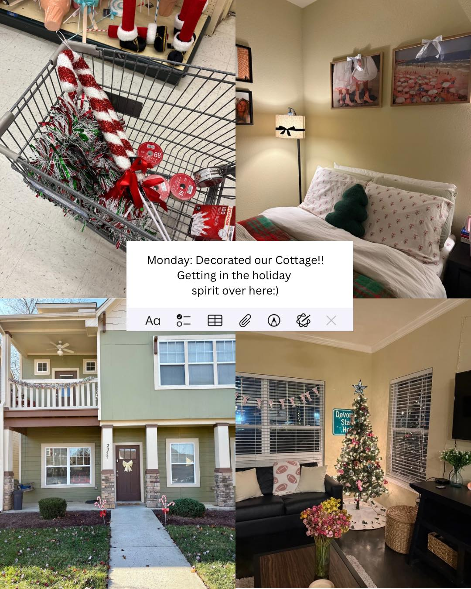

Relief
Immediate support that reduces harm and connects people to services.

South Anchorage High School Nordic Ski Booster Club is a charitable organization recognized as a 501(c)(3) public charity (EIN 10245713). Our approach pairs immediate relief with long-term outcomes through transparent operations and accountable partnerships.
Immediate support that reduces harm and connects people to services.
Training and employer links leading to stable work.
Activation of land for safe sites and paths to permanence.